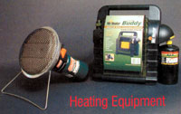

Matthew Stallbaumer
Coleman's BlackCat Portable Catalytic Heater (about $55) provices 3,000 Btu for eight hours using a 1-pound propane canister. Available from (800)835-3278 or www.coleman.com . Right: Mr. Heater's Portable Buddy Propane Heater (about $70) heats up the 200 square feet, with 4,000 Btu and 9,000 Btu settings. It is approved for indoor use and has an automatic low-oxygen shut-off system. To find a local retailer, call (800) 251-0001 or go to www.mrheater.com .